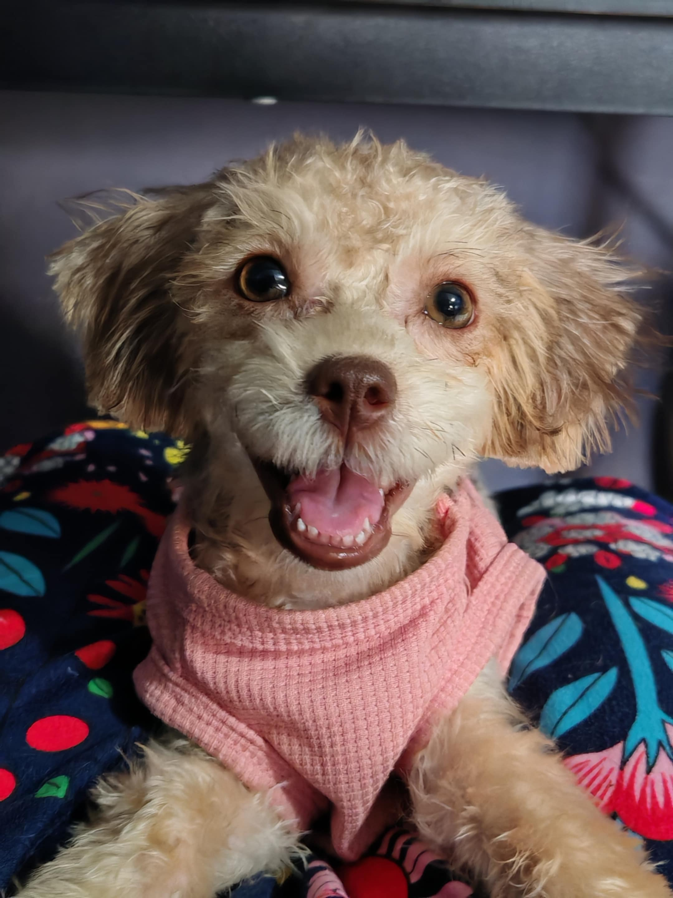

Hi! My name is Chopper Santos.
You can call me Chopper.
I am half Poodle half Shih tzu, with brown nose and curly hair.
If I am lost, please help me get home to my furParents.
Parents: Paul Benedict M. Santos and Therese Angelica Duritan
Address: Kimchi's Kitchen, Ruhale Street, Tipas, Taguig City
Email: paulbenedicts482@gmail.com or angel.therese96@gmail.com
Contact Nos.: 0907-787-0014 or 0963-909-1130